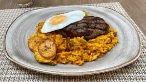

Gastronomía Cruceña

Majadito
Arroz con charque o pollo, acompañado de plátano y huevo.
Sonso
Yuca machacada con queso, típica del oriente boliviano.
Locro
Sopa tradicional con arroz, carne y verduras.

Keperí
Carne de cerdo asada, muy popular en Santa Cruz.
Masaco
Preparación de yuca o plátano con charque.